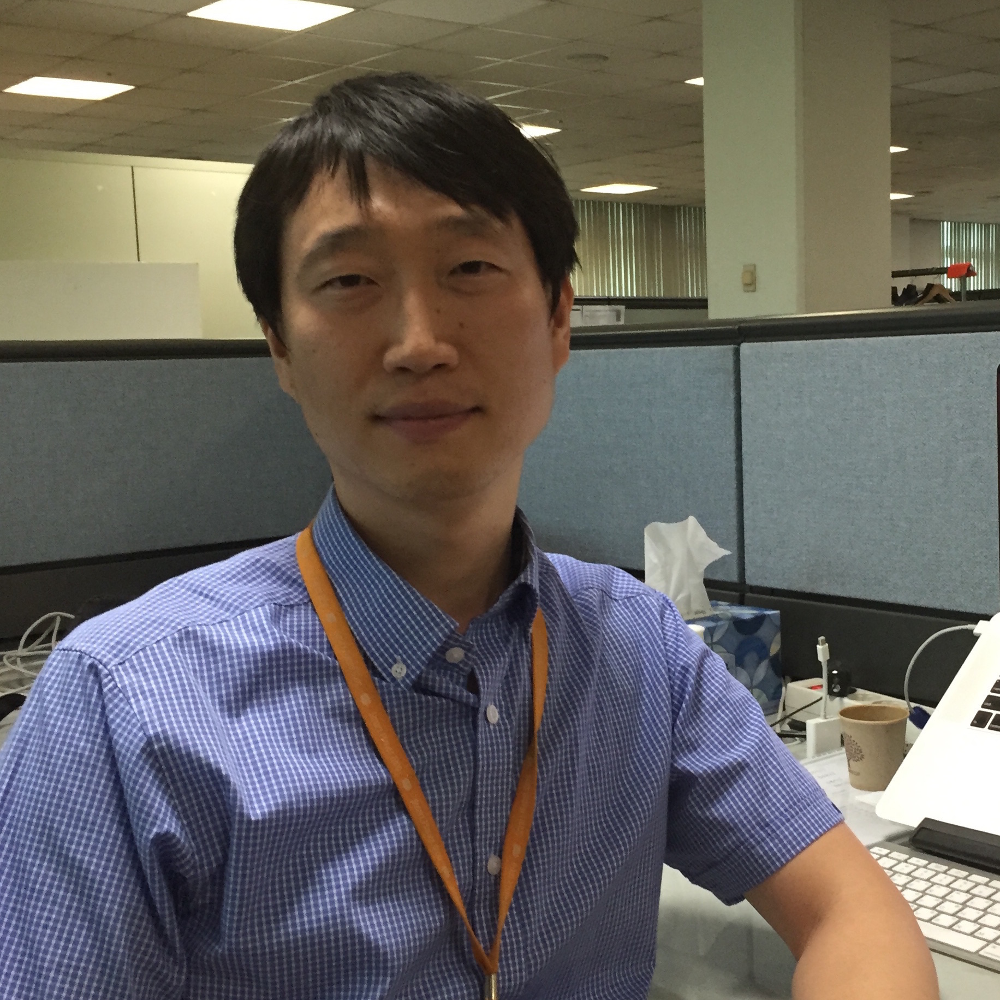

프로그램
Day1 : 7월13일
-
Foundation Keynote
10:00~10:30 -
발표명 -
발표자 OpenStack Foundation, Executive Director, Jonathan Bryce 발표자
프로필Jonathan Bryce, who has spent his career building the cloud, is Executive Director of the OpenStack Foundation. Previously he was a founder of The Rackspace Cloud.
He started his career working as a web developer for Rackspace, and during his tenure, he and co-worker Todd Morey had a vision to build a sophisticated web hosting environment where users and businesses alike could turn to design, develop and deploy their ideal web site – all without being responsible for procuring the technology, installing it or making sure it is built to be always available. This vision became The Rackspace Cloud. Since then he has been a major driver of OpenStack, the open source cloud software initiative.발표요약 -
-
Sponsor Keynote
10:50~11:10 -
발표명 Red Hat OpenStack Platform - Driving Enterprise Adoption of OpenStack
발표자 Red Hat, Senior Principal Product Manager, Brendan Paget 발표자
프로필브렌단 파제(Brendan Paget)는 1986년 IBM 호주 및 뉴질랜드 PC 사업부에 시스템 엔지니어(Systems Engineer)로 합류했다. 1997년 말 브렌단은 미국 IBM 서버 개발 조직의 전세계 제품 마케팅 관리자(World Wide Product Marketing Manager)로서 4년 간의 과제를 수행하기 위해 미국으로 갔다. 미국 노스캐롤라이나주 롤리에 위치한 리서치 트라이앵글 파크(The Research Triangle Park)에서 브렌단은 전세계 시장에 서버 시스템 10개를 구축 및 도입하는 일을 담당했다. 그 후 브렌단은 IBM 성장시장 부서(Growth Market Unit) 조직으로 돌아와 아시아태평양, 라틴 아메리카, 중부 및 동유럽, 중동 및 아프리카 지역에 있는 성장 가능성 높은 국가 시장을 대상으로 한 시스템 x(System x) 서버 및 블레이드센터(BladeCenter) 서버 제품 및 브랜드 전략을 담당했다. 2012년부터 브렌단은 대만 타이페이에 위치한 IBM 개발 연구소의 WW 시스템 x 하이 볼륨(WW System x High Volume) 사업부에서 마케팅 이사(Director of Marketing)겸 제품라인 관리자(Product Line Manager)를 역임했다. 현재 브렌단은 싱가포르에서 레드햇 아태지역 소속의 제품 마케팅 담당자로서 레드햇 엔터프라이즈 리눅스(Red Hat Enterprise Linux), 레드햇 가상화(Red Hat Virtualisation) 및 레드햇 오픈스택(Red Hat OpenStack)을 총괄하고 있다. 발표요약 As organisations look to deploy private and hybrid cloud solutions, OpenStack is high on the list of products that can meet their requirements. At Red Hat, we work with the communities to develop, and then productise OpenStack to enable our customers to achieve a successful cloud business. Hear what Red Hat is doing with OpenStack, and understand the keys to a successful business outcome.eeeeeeeeeeee
-
Sponsor Keynote
11:10~11:30 -
발표명 Empowering our customers to change the world with data
발표자 NetApp, Senior Director, Lee Nigel 발표자
프로필SolidFire, Software Sales and Cloud NetApp Asia Pacific 발표요약 -
-
Sponsor Keynote
11:30~12:00 -
발표명 4차 산업혁명 시대의 오픈소스 소프트웨어 인력 문제
발표자 오픈소스소프트웨어재단 고건 이사장 발표자
프로필- 전 서울대 교수
- 전 서울대 학술정보원장
- 전 한국공개소프트웨어활성화포럼 의장
- 전 전주대학교 제12대 총장
- 현 이화여자대학교 석좌교수
- 현 오픈소스소프트웨어재단 이사장발표요약 -
-
TrackⅠ
13:00~13:30 -
발표명 OpenStack의 컨테이너화 및 Kubernetes를 통한 Lifecycle 관리 기술
발표자 SK텔레콤 김대성 매니저 발표자
프로필2005년에 호스트웨이IDC 연구소에서 가상화 서비스 개발을 시작으로 이노그리드 cloudit 플랫폼 개발 총 책임자로 근무 후 삼성SDS, SK텔레콤 등에서 Openstack을 활용한 클라우드 서비스 개발 업무를 하고 있습니다. 현재는 Openstack의 컨테이너화 및 Kubernetes에 관심이 많습니다. 발표요약 SK텔레콤 NIC기술원에서 진행 중인 TACO(T All Container Openstack) 프로젝트에 대해 소개합니다. Openstack을 Kubernetes에 올리는 기술 및 구조에 대해서 설명하고 그 과정에서의 경험과 아키텍처의 장단점에 대해 말씀 드리고자 합니다.
- Openstack Helm Project
- Helm (The Kubernetes Package Manager)
- Kubernetes (Container Orchestrator)
-
TrackⅠ
13:40~14:10 -
발표명 Openstack EPA update for NFV
발표자 Intel 김우람 SP Solutions Architect 발표자
프로필Intel
: SP Solutions architect
Nokia
: IP Solutions architech
Cisco Systems
: SP Systems Engineer
Industry Certification
CCIE#9351/Cisco Mobile Packet Core R2.0/VCP5-DCV/RHCSA발표요약 -
-
 TrackⅠ
TrackⅠ
14:20~14:50 -
발표명 SUSE Openstack Cloud 7
발표자 SUSE 나영관 지사장 발표자
프로필나영관대표는 1996년 Novell 입사이후, 국내 SUSE Business를 총괄하고있습니다.
Novell Asia Pacific Consulting팀의 멤버로 시작하여 AP의 Telco,공공및 다양한 고객에게 Mission Critial한 시스템 도입에 주요한 Consulting Project에 참여했고, 2003년 Novell의 SUSE 인수 이후 국내에서 SUSE의 전략 및 국내/외 협력관계로 국내 SUSE 사업을 총괄하고 있습니다.발표요약 SUSE의 Private 솔루션 전략을 성공사례를 통해서 소개하는 시간입니다.
또한 최신 버전의 SUSE OpnStack Cloud 7과 SUSE Linux Enterprise 12 등 SUSE의 다양한 솔루션을 접할 수 있는 시간입니다.
-
TrackⅠ
15:10~15:40 -
발표명 OpenStack 기반의 Kubernetes, 어디까지 해봤니?
발표자 IBM 클라우드 에반젤리스트 공진기 차장 발표자
프로필개발, 인프라, 네트워크, 보안 등 컴퓨터에 관련된 모든 부분에 얕지만 넓은 지식을 토대로 한국IBM 에서 Bluemix Technical Evangelist 로 활동하면서 새로운 기술과 소식을 전파하고 있습니다. 발표요약 오픈소스 기반의 클라우드와 컨테이너가 확장되면서 Kubernetes 기반으로 OpenStack 을 운영하거나, OpenStack 기반으로 Kubernetes 를 운영하는 시도가 있습니다. 이 세션에서는 Cinder 스토리지나 로드 밸런서처럼 OpenStack 과 Kubernetes 를 잘 연동할 수 있는 방법으로부터, 컨테이너 볼륨처럼 Kubernetes 에 필요하지만 OpenStack 에서는 제공되지 않는 기능들, Swift object storage 처럼 OpenStack 에서는 제공되지만 Kubernetes 에서 지원되지 않는 기능들을 짚어봅니다. 그리고 Kubernetes 플러그인을 활용하거나 새로운 OpenStack 기능을 통해 이 간극을 줄여 OpenStack 기반으로 Kubernetes 를 효과적으로 운영할 수 있는 방안을 찾아봅니다.
-
TrackⅠ
16:00~16:30 -
발표명 오픈스택을 활용한 IoT-Cloud 서비스 개발기
발표자 광주과학기술연구원
한정수, 김승룡발표자
프로필한정수: 광주과학기술원에서 석사 과정을 마치고 박사과정을 진행중에 있습니다. 오픈스택을 활용한 테스트베드 구축 관련 경험을 보유하고 있고, 워크플로우 기반의 오케스트레이션에 많은 관심을 갖고 연구를 진행 중에 있습니다.
김승룡: 광주과학기술원에서 석사 과정을 마치고 동 대학원에서 박사 과정 중에 있습니다. IoT-Cloud 환경에 대응하는 컨테이너 기반의 서비스에 대해 관심을 가지고, 해당 서비스들의 신뢰성있는 운영을 위한 모니터링과 오케스트레이션 관련 연구를 진행 중입니다.발표요약 Docker Container 기반으로 구성된 예제 수준의 IoT-Cloud 서비스를 구현하고, 이를 OpenStack 환경에서 설치하고 운영하는 전반적인 과정에 대한 경험을 공유합니다. 지속적으로 센서 데이터를 수집하고 활용하는 서비스를 안정적으로 운영하기 위해 겪었던 문제들과, 이를 해결하기 위한 접근들에 대해 말씀드리고자 합니다.
-
TrackⅠ
16:30~17:00 -
발표명 오픈스택을 사용한 네이버의 플랫폼 통합 방법
발표자 네이버 윤준호 발표자
프로필삼성전자, 네이버등에서 개발 플랫폼을 만드는 일을 해왔습니다. nGrinder를 포함한 다수의 오픈소스 프로젝트에 참여하고 있으며, 현재는 네이버에서 다양한 사내 플랫폼을 PaaS 형태로 전환하는 일을 하고 있습니다.
다둥이의 아빠이고, 주말마다 초등학생 첫째 딸에게 파이선을 가르치고 있습니다.발표요약 네이버가 가지고 있는 서비스 플랫폼들은 네이버의 서비스와 데이터를 여러 방향에서 받쳐주고 있습니다. nDrive의 대규모 파일을 저장할 수 있는 대규모 파일 스토리지를 포함하여, 사용자의 기기와 서비스를 제공하는 서버를 효율적으로 연결하고, 글로벌 사용자들에게 메시지를 전송하며, API 호출결과를 중계하거나 대칭키 관리, 권한 관리, 성능/자원 모니터링, 채팅 플랫폼, 로그 집계, 컨테이너 클러스터 등이 서비스 플랫폼으로 동작하고 있습니다. 현재 네이버 서비스 플랫폼은 네이버내 개발자가 좀 더 편리하게 사용할 수 있게 하기 위해 전체 플랫폼을 PaaS형태로 개편하고 있으며, 이를 위해 Openstack의 컴포넌트를 차용하고 있습니다. 이 발표에서는 네이버에서 전체 플랫폼을 통합 하게된 계기에 대한 설명을 시작으로, 개별 플랫폼을 하나의 콘솔상의 마이크로 서비스 아키텍쳐로 재구성하기 위해 오픈스택 Keystone과 넷플릭스 Zuul을 어떻게 활용하였는지 설명합니다. 또한 이를 효율적으로 배포 / 운영하기 위해 Openstack Kolla를 적극 사용한 사례를 설명합니다
-
TrackⅠ
17:10~17:50 -
발표명 Kolla를 이용한 Production-Ready OpenStack Container 생성 및 CI (Continuous Integraton) 파이프라인
발표자 SK텔레콤 추자원 매니저 발표자
프로필2005년부터 일본에서 대규모 Enterprise Java 프로젝트들에 참여했습니다. 2012년부터는 삼성SDS에서 Openstack 운영과 Multi-Cloud 통합 관리 플랫폼 개발을 했으며, 현재는 SK텔레콤에서 OpenStack의 컨테이너화 및 Kubernetes를 통한 Lifecycle 관리 개발을 하고 있습니다. 발표요약 Kolla 프로젝트의 소개 및 구조에 대한 설명과 활용 방법, 그리고 CI 사례에 대해서 발표합니다.
- Openstack Kolla 소개 및 Openstack 서비스의 Containerization
- Kolla 구조 및 분석
- Kolla를 활용한 CI(Continuous Integraton) pipeline
- Kolla 이미지 deploy
-
Track Ⅱ
13:40~14:10 -
발표명 Accelerate Efficient Virtualized Network in Cloud. -Can the Open vSwitch (OVS) bottleneck be resolved?
발표자 Mellanox Technologies 정연구 이사 발표자
프로필- 2014 ~ 현재) Sr. System Engineer,
High performance Compute,Storage and Networking Solution
in HPC, AI/Machine Learnig and Cloud Platform.
at Mellanox Technologies.
- 2012 ~ 2014 ) Sr.Sales Engineer, Enterprise Storage Solution. at DELL.
- 2008 ~ 2012 ) Sr. System Engineer, Fiber Channel SAN Networking, at BROCADE.
- 2001 ~ 2008 ) Adv.Technical Sales Support and Sr. System Sales,
Enterprise Storage and Server system. at IBM.발표요약 Practically, Open virtual Switch (OVS) has been a bottleneck for Cloud network and scalability. We are going to present how we can solve this problem using Accelerated Switching And Packet Processing (ASAP2) Direct which is supporting OVS offload, way to offload OVS Dataplane onto the embedded switch (eSwitch) implemented in the server NIC.
-
Track Ⅱ
14:20~14:50 -
발표명 인공지능 APM을 이용한 OpenStack 모니터링 – Dynatrace
발표자 Dynatrace 나성운 이사 발표자
프로필현재 Dynatrace Korea의 Sales Engineer 팀을 이끌고 있으며, 17년 동안 네트워크, Synthetic, 서버, Web/WAS/.Net, Cloud 등 다양한 관점의 어플리케이션 성능 관리 분야에서 많은 프로젝트 및 컨설팅을 수행한 경험이 있다. 최근에는 OpenStack을 비롯한 다양한 Cloud 환경에 맞는 새로운 방식의 성능 관리 Process에 집중하고 있으며, 기존 데이터센터와 새로운 Cloud 환경 연결 및 통합 관리 그리고 인프라와 어플리케이션, 사용자 경험을 통합 관리하는 분야에서 Dynatrace의 새로운 기술들을 지원하고 있다. 발표요약 OpenStack 환경에서 운영되는 인프라, 프로세스, 서비스, 어플리케이션, 사용자 UX 성능을 효율적으로 모니터링할 수 있는 새로운 Dynatrace의 인공지능 기반 솔루션을 소개합니다.
Big Data 모델링, OS당 한번만 설치하는 One Agent, 자동 Baseline을 이용한 문제 인식 및 연관/인과 관계를 자동 분석하여 원인을 바로 제시하는 인공지능 기법 등 복잡한 클라우드 환경에서 필수적인 새로운 기법을 들어보세요.
-
NO IMAGE
Track Ⅱ
16:10~16:40 -
발표명 클라우드 시대의 모니터링 성능 분석 방법
발표자 와탭 랩스 손영수 발표자
프로필발표요약 이미 물리적인 서버를 클라우드로 마이그레이션 한다거나, 클라우드 상에서 대규모의 서비스를 운영할때 어떻게 운영을 해야 하는지 사례들을 공유해 드리겠습니다. twitter / airbnb 외국 사례와 함께, 한국의 여러 기업들이 해외로 진출할때, 반대로 중국의 여러 게임이 한국에서 배포될때 발생하는 다양한 문제들을 공유하고 어떻게 해결했는지 방안들도 공유하고자 합니다.
-
Track Ⅱ
16:30~17:00 -
발표명 OpenStack Picasso 기반의 GPU사용 서버리스 아키텍처 개발
발표자 KAIST 김재욱 발표자
프로필2016.03 - KAIST 소프트웨어대학원 석사과정 재학중(RESLab, 지도교수:김대영)
2015.06 - 2016.06 소프트웨어 마에스트로6기
수료
2014.05 - 2015.06 전자부품연구원 스마트미디어
연구센터 위촉연구원
2009.03 - 2016.02 한국항공대학교 컴퓨터공학과 졸업발표요약 서버리스 컴퓨팅은 현재 클라우드 컴퓨팅에서 이슈로 아마존의 Lambda를 시작으로 여러 기업에서 서버리스 프레임워크를 공개하였습니다. OpenStack 진영에는 공식 프로젝트로 Picasso라는 서버리스 프로젝트가 있습니다. Picasso 뿐만 아니라 다른 서버리스 프레임워크에서도 GPU 프로그래밍이 가능한 형태의 서버리스 프레임워크는 존재하지 않습니다. 이번 발표에서는 Picasso와 NVIDIA-Docker를 활용하여 고성능의 MicroService 개발 및 배포 방안과 활용에 대해서 이야기하고자 합니다.
- Track Ⅱ 17:10~17:50
-
발표명 하이브리드 클라우드를 위한 Horizon AWS Plugin 공유
발표자 카카오 홍석용 발표자
프로필전) LG CNS
LG CNS 퍼블릭 클라우드 포탈 및 Open API
개발/운영
LG CNS 퍼블릭 클라우드 구축/유지보수
LG전자 및 LG그룹사 프라이빗 클라우드
구축/유지보수
현) 카카오
카카오 클라우드 포탈 개발
Ironic(Baremetal Provisioning) 사내용
Driver 개발발표요약 본 세션에서는 OpenStack Horizon(Web UI)에서 AWS EC2 자원을 관리하고, OpenStack과 AWS 간에 VM 마이그레이션을 할 수 있게 해주는 Horizon AWS Plugin을 공유하고 시연하려고 합니다.
또한, Horizon Plugin 개발을 쉽게 시작 할 수 있도록 도와주는 Starter Kit 을 공유하고자 합니다. 이를 통해 OpenStack을 사용하시는 많은 개발자분들께서 다양한 오픈소스 Plugin을 만들어 공유하는 분위기가 조성되면 좋겠습니다.
-
Track Ⅲ
13:00~13:30 -
발표명 오픈스택 환경에서 데이터 보호를 위한 다양한 기술 소개
발표자 NetApp 김진학 매니저 발표자
프로필김진학 매니저는 최근 5년 동안, 한국 NetApp에서 클라우드 비즈니스에 대한 컨설팅 및 Pre-Sales를 담당 하고 있으며, 특히 APAC 내 여러 지역에 OpenStack 관련 Skill set을 기반으로 다양한 기술 지원을 하고 있습니다.
OpenStack에서 Data 저장소를 필요로 하는 여러 프로젝트들(Cinder, Manila, Swift)에 대한 전문지식을 보유하고 있으며, 이를 기반으로 고객이 보다 나은 서비스를 구현하도록 돕고 있습니다.발표요약 -
-
Track Ⅲ
13:40~14:10 -
발표명 Mesosphere DC/OS - Windows와 Linux Docker의 하모니
발표자 HPE 서경진 차장 발표자
프로필1. 경력사
• 2015년 1월 ~ 현재 : HPE APJ Helion OpenStack Professional팀
• 2010년 10월 ~ 2014년 12월 : 동부CNI (현 ㈜동부) 기술연구소 TA팀
• 2004년 1월 ~ 2010년 10월 : 대우정보시스템 기술지원센터 기술서비스팀
2. 주요수행 프로젝트
• 2017년 5월 ~ 2017년 6월 : SK Hynix Mesosphere 기반 Docker 테스트 환경 구축
• 2016년 2월 ~ 2016년 8월 : 한화S&C 클라우드 시스템 구축
• 2015년 7월 ~ 2015년 12월 : SKT Public Cloud 1.5 구축
• 2014년 2월 ~ 2014년 8월 : 스마트카드 고속버스 통합단말기 기반 발권고도화
• 2014년 1월 ~ 2014년 6월 : 미래에셋생명 서버이전 및 기반 SW Upgrade 사업발표요약 1. Hybrid IT - Container
2. Container Orchestrator (Container as a Service)
3. Mesosphere DC/OS 소개
4. OpenStack과 Mesosphere DC/OS
5. 적용사례 및 기대효과
-
NO IMAGE
Track Ⅲ
15:10~15:40 -
발표명 OpenStack Network가 SDN/NFV를 만났을 때!!!
발표자 아토리서치 송용주 연구소장 발표자
프로필현재 SDN/NFV 전문기업인 아토리서치에서 연구소장을 담당하고 있습니다.
SDN 컨트롤러인 OBelle를 개발 하였으며, NFV 플랫폼인 ATHENE에 대한 개발 총괄을 담당 하였습니다.
진정한 클라우드 구축을 위하여 네트워크 파트에 SDN/NFV 개념을 적용시켜 다양한 시도를 하고 있습니다.발표요약 1. 클라우드 네트워크를 위한 OpenStack 뉴트론에 대한 리뷰(한계점)
2. OpenStack에 SDN/NFV 기술 적용을 통한 클라우드 네트워크 변화에 대한 비지니스적/기술적 리뷰
3. OpenStack 기반 클라우드 네트워크 혁신을 위한 기술적 제언
-
 Track Ⅲ
Track Ⅲ
15:10~15:40 -
발표명 Openstack을 이용한 NFV 구축
발표자 삼성전자 박종한 발표자
프로필삼성전자 종합기술원에서 CCN (Content-Centric Networking)을 연구했으며, 2014년부터는 Openstack을 이용한 NFV 환경 설계 및 구축 관련 일을 담당하고 있습니다.
국내외 통신사들을 상대로 PoC 및 상용 프로젝트를 다수 진행했습니다.발표요약 NFV가 일반적인 IT Cloud와 어떤 면에서 다른지 그리고 이를 만족시키기 위해 Openstack의 기능을 어떻게 사용해야 하는지를 살펴보는 시간을 가지고자 합니다.
그리고, 삼성전자에서 자체 packaging한 openstack에 추가되어 있는 기능을 통해 NFV를 위한 openstack은 어떻게 달라야 하는지도 확인할 수 있습니다.
-
Track Ⅲ
16:10~16:40 -
발표명 데이터센터 서버의 새로운 희망, ARM 서버
발표자 액세스 유명환 연구소장 발표자
프로필- 엑세스 주식회사 연구소장 (CTO)
- 정부통합전산센터 클라우드 기술위원
- 대구경북과학기술원(DGIST) 산학협력 멘토
- 미래부 SW마에스트로 멘토
- 네이버 D2 Startup Factory 기술 파트너
- 오픈스택 한국 커뮤니티 네트워크 분과장발표요약 클라우드와 사물인터넷(IoT)의 급속한 발전으로 인해 데이터센터의 중요성과 더불어 문제점 역시 크고 복잡해지고 있는 상황입니다.
근 20년 동안 놀랍도록 전혀 변하지 않고 있는 19인치 랙과 서버 만으로 풀리지 않는 데이터센터의 문제들을 ARM 서버라는 새로운 패러다임으로 그 해법을 찾아보고자 합니다.
국내 최초로 데이터센터용 ARM 서버를 개발한 경험을 토대로 서버를 실제 개발하기 위한 기술 요소들과 함께 근 20년 동안 바뀌지 않는 19인치 랙과 서버에 대해 어떻게 하면 비용 절감(TCO) 효과와 함께 이를 바꿀 수 있는지에 대한 새로운 생각들을 나누고자 합니다.
-
트랙3
16:40~17:10 -
발표명 Network performance enhancement on OpenStack based Hybrid Cloud
발표자 삼성전자 박재만 발표자
프로필Senior Software Engineer at Software R&D Center, Samsung Electronics(2011 ~ 2017)
M.S. and Ph.D., Mathematical Science, KAIST (2005 ~ 2010)발표요약 We present an efficient and manageable cloud solution that can run virtual machines and containers in an integrated way that those are first class resources for running cloud native applications. Specifically our approach leverages existing OpenStack services to provision container clusters rapidly in a heterogeneous environment and to connect virtual machines and containers efficiently on an integrated network plane. In doing so, we focus on (1) the template-based provisioning for handling various types of container clusters and (2) the network abstraction translating for bridging the gap of different network constructs
-
 Track Ⅲ
Track Ⅲ
17:10~17:50 -
발표명 카카오에서의 Trove 운영사례
발표자 카카오 정원천 발표자
프로필2013년부터 카카오에서 클라우드 플랫폼 관련된 업무를 해오고 있습니다. 다양한 사내 PaaS 플랫폼 개발 및 운영에 참여해 오고 있으며, 오픈스택 Database as a Service인 Trove를 사내에 도입해서 운영해 오고 있습니다.
최근에는 Container as Service 개발에 참여해 클러스터 스케일이 커지면서 발생하는 여러가지 이슈에 대해 고민하고 있습니다.발표요약 카카오에서는 2015년부터 Trove를 이용해서 개발자들에게 개발용 데이터베이스를 제공해오고 있습니다.
Trove 아키텍처에 대해서 간략하게 설명하고, juno 버전부터 mitaka까지 업그레이드해 오면서 운영중에 겪은 경험에 대해 공유합니다.
Day2 : 7월14일
-
Keytnote
09:40~10:20 -
발표명 Cloud Native Service Platform based on Kubernetes
발표자 카카오 공용준 셀장 발표자
프로필- 발표요약 -
-
OpenStack Day &
Container Day
10:50~11:40 -
발표명 Kubernetes/OpenStack-Helm 튜토리얼 1부
- 기술 상세설명발표자 SK텔레콤 안승규 발표자
프로필20년간 삼성SDS에서 근무했으며, 근무하는 동안 2011년 이전까지 Java 기반의 Enterprise Application 개발하였고, 이후 2011년 부터 2014년 까지 OpenStack 을 활용한 Private Cloud 구축을 진행하였습니다. 이후 SKT 에서 Cloud Foundry 기반의 PaaS 를 구축하였고 현재는 Kargo 기반의 Kubernetes 구축, Kubernetes 기반의 OpenStack 구축, Netflix 의 Spinnaker & Chaos Monkey 로 Application Resilience 테스팅 자동화를 진행하고 있습니다. 발표요약 Kubernetes 의 Architecture, Kubernetes 의 다양한 Workloads 를 살펴보고, Kubernetes 기반 위에 OpenStack 을 구축하는 OpenStack Project 인 OpenStack-Helm 의 상세 내용, OpenStack-Helm 에서 활용하는 Kubernetes Helm 프로젝트를 설명합니다.
-

OpenStack Day &
Container Day
15:00~17:00 -
발표명 IBM Bluemix 쿠버네티스 클러스터에 GitLab CE 구축해보기
발표자 IBM 홍정석 차장 발표자
프로필한국 IBM의 Developer Outreach Team 소속으로 IBM 소프트웨어 엔지니어로 근무
과거 모바일 플랫폼의 개발, 기술 지원 및 교육 경험과 클라우드 애플리케이션 개발자 경험을 바탕으로 현재 Bluemix meetup이나 한국 IBM developerWorks 블로그에 튜토리얼을 연재를 통해 개발자의 입장에서 IBM 서비스를 소개발표요약 * Docker & Kubernetes Concept
* IBM Cloud Platform Bluemix 및 Container 서비스 소개
* Hands-on 환경 구성 ( Minikube & Bluemix Container Registry )
* Bluemix Toolchain & Pipeline을 이용한 DevOps 환경 구축
-
Ceph Day
10:50~11:40 -
발표명 Cloud Native Service Platform based on Kubernetes
발표자 라인 최정대 발표자
프로필KT Cloudware – Cloud Engineer
Kakao – Cloud Engineer/ 셀장
Line Plus Corp – Cloud Engineer
2012부터 가상화/ 클라우드를 시작해서 아직까지 오픈스택 및 클라우드 컴퓨팅을 회사에 전파하고 실제 사용할 수 있는 시스템을 만들려고 노력하고 있습니다.
현재는 Line에서 일본/ 한국/ 아시아를 대상으로 서비스하는 Private Cloud 서비스를 만들고 있습니다. 특히 Cloud Native Service를 어떻게 회사 내에서 사용하게 할 수 있는지에 관심이 많습니다.발표요약 * 라인의 Private Cloud 서비스인 Verda에 대해서 소개합니다.
* Kubernetes를 이용한 Cloud Native Service Platform을 소개하며, 이를 구상하면서 고려했던 어려 고민을 공유합니다.
-
NO IMAGE
Ceph Day
14:00~14:50 -
발표명 Advanced Features for Ceph: Deduplicaiton and QoS
발표자 SK텔레콤 오명원, 박병수 발표자
프로필System Software Developer at SK Telecom 발표요약 Ceph Community 와의 공동 개발 중인 Ceph 기능 설명과 기여 현황 소개
-
Ceph Day
15:00~15:50 -
발표명 SUSE Ceph Storage
발표자 SUSE 나영관 지사장 발표자
프로필나영관 대표는 1996년 Novell 입사이후, 국내 SUSE Business를 총괄하고있습니다.
Novell Asia Pacific Consulting팀의 멤버로 시작하여 AP의 Telco,공공및 다양한 고객에게 Mission Critial한 시스템 도입에 주요한 Consulting Project에 참여했고, 2003년 Novell의 SUSE 인수 이후 국내에서 SUSE의 전략 및 국내/외 협력관계로 국내 SUSE 사업을 총괄하고 있습니다.발표요약 본 세션에서는 급격하게 증가하는 엔터프라이즈 데이터를 경제적인 비용으로 처리할 수 있는 대안을 소개합니다.스토리지 부분의 시장 변화와 함께, SUSE Ceph Storage 를 적용해서 최고의 효과를 볼 수 있는 Application또한 비즈니스 부분도 소개합니다
-
 Ceph Day
Ceph Day
16:00~16:50 -
발표명 On Demand Block Storage for Docker
발표자 Naver 유장선 발표자
프로필2012년부터 2016년까지 Diablo 버전부터 OpenStack Public / Private Cloud 를 구축 / 개발하는 업무를 진행하였습니다. 2016년부터 Docker Swarm 기반 PaaS 구축에 대한 개발을 진행하고 있고, 현재는 Docker 에 Persistent Volume 을 Ceph Storage 로 제공하는 서비스를 개발중에 있으며, OpenStack 에 지속적으로 Code Contribution 을 진행하고 있습니다. 발표요약 Docker Container 에 Persistent Volume 으로 Ceph Storage 를 제공하는 Docker Volume Plugin 개발사례를 공유드립니다.
* OpenStack Kolla 를 통한 Ceph Storage 배포 및 사용법
* Docker Volume Plugin v2 방식으로 개발한 사례 공유(v1 의 문제점 등)
* Plugin 을 통하여 OpenStack Cinder / Keystone 과 연동하고, Ceph Storage 를 사용하는 방법
* 개발 시 발생된 이슈들과 이를 어떻게 해결하였는지에 대한 정보 공유
* Keystone / Cinder 연동을 통한 Multi-tenancy 지원 방안 공유
-
Container Day
10:15~11:40 -
발표명 Kargo(kubespray)를 통한 Kubernetes
자동 구축발표자 엑슨투 이경진 대표 발표자
프로필엑슨투 대표이사 발표요약 Kargo(Kubespray) 를 통해 K8S를 쉽게 빠르게 자동 설치하는 방법을 배워 봅시다. 또한 Prometheus / Grafana를 이용하여 K8S 모니터링 구축 예제를 살펴 봅시다.
■ Ansible 을 사용하여 Kubernetes 설치 자동화 (HA)
■ CoreOS , Debian , Ubuntu , Fedora 및 CentOS / RHEL 지원
■ AWS, GCE, Azure, OpenStack or Baremetal에 배포 가능
■ https://github.com/kubernetes-incubator/kargo
-
Container Day
13:00~13:50 -
발표명 Serverless Computing Platform with OpenWhisk
발표자 네이버 김동경 발표자
프로필2010년부터 5년간 삼성전자에서
분산 메시징 / 클라우드/ 빅데이터 / 이벤트 프로세싱에 관련된 플랫폼들을 개발해왔습니다.
현재는 네이버에서 Serverless 컴퓨팅 플랫폼을 개발하고 있고,
관련 오픈소스 구현체인 Apache OpenWhisk의 Contributor로도 활동하고 있습니다.발표요약 최근 Serverless computing 기술에 대한 관심이 높아지고 있습니다. Serverless computing이란, 개발자는 서버의 provisioning이나 운영을 신경쓸 필요 없이, 코드만 작성해서 등록하면, 플랫폼이 알아서 해당 코드를 실행해주고, 결과를 반환해주는 시스템을 말합니다. 자주 실행되지 않는 로직의 실행이나, Thrid party API 연동, Sandbox 형태의 안전한 실행 환경 등이 필요할 때, 유용하게 이용할 수 있습니다.
네이버 사내에서도 이런 Serverless computing에 대한 요구사항이 생기기 시작했고, 여러 opensource들을 고려하여, Apahce OpenWhisk를 기반으로 구축을 시작했습니다. 네이버 사내 플랫폼들은 Keystone으로 인증/권한이 통합되어 있기에, 본 플랫폼도, Keystone과 연동이 필요했고, OpenWhisk의 인증 및 권한의 개념을 Keystone의 인증/권한 개념으로 매핑하는 작업이 필요했습니다.
본 세션에서는 Serverless computing에 대한 기본적인 소개 및 그 Open-source 구현체인 Apache OpenWhisk에 대한 소개, 그리고 이를 네이버에 도입하는 과정에서 겪고 있는 경험 및 고민들을 공유합니다
-
Container Day
14:00~14:50 -
발표명 DKOS: Mesos기반의 Container Orchestration
발표자 카카오 정원천 발표자
프로필2013년부터 카카오에서 클라우드 플랫폼 관련된 업무를 해오고 있습니다. 다양한 사내 PaaS 플랫폼 개발 및 운영에 참여해 오고 있으며, 오픈스택 Database as a Service인 Trove를 사내에 도입해서 운영해 오고 있습니다.
최근에는 Container as Service 개발에 참여해 클러스터 스케일이 커지면서 발생하는 여러가지 이슈에 대해 고민하고 있습니다.발표요약 다음메일, 카톡 게임탭, 카카오주문하기 등의 서비스가 올라가 있는 mesos 기반의 container orchestration 서비스인 DKOS에 대해 소개합니다. 수천개의 노드를 어떻게 구성해서 사용하고 있는지에 대한 아키텍처를 설명합니다.
-
Container Day
16:00~16:50 -
발표명 OpenStack의 VM개념을 통한 docker의 활용
발표자 포스코ICT 이태영 발표자
프로필[2017]
1> 제6회 KCD (Korea Community Day) 세미나 발표(02.25)
- https://www.slideshare.net/taeyounglee14
47/2017-open-stack
2> 2017 Tensorflow Dev Summit Extended Seoul 세미나 발표(02.22)
- https://www.slideshare.net/taeyounglee14
47/2017-tensor-flow-dev-summit
[2016년]
1> BISC 컨퍼런스 - Machine Learning in SPAM발표 (11.05)
발표자료 - http://www.slideshare.net/tae
younglee1447/machine-learning-in-spam
[2015년]
1> Python Network강의 수행
2> 6월 26일 R User Conference 2015 세미나
발표 -http://rconference.fossa.kr/Speaker
발표자료 - https://www.slideshare.net/secret
/dzVcikxOkWg8TP
통계청 후기 - http://m.blog.naver.com/
hi_nso/220421743386
3> 5월 29일 제33회 빅데이터 분석 전문가 오픈 세미나 발표
-http://www.slideshare.net/
taeyounglee1447/python-48557728발표요약 - OpenStack의 VM개념과 Docker의 공통점
- docker의 활용 방안
1> docker를 활용한 rest api호출 및 통신 기본 개념
2> 자연어 처리에 필요한 syntaxnet과 brat 구성에 대한 간략한 개요 및 소개
3> 시연
-
NO IMAGE
OpenStack Day
13:00~17:00 -
발표명 개발자와 운영자를 위한 Red Hat OpenShift Container Platform 실습
발표자 Red Hat 오세영 차장 발표자
프로필발표요약 마이크로서비스 애플리케이션을 쉽고, 빠르게 빌드한 후 컨테이너 이미지로 패키징 및 배포를 자동으로 수행하는 방법을 확일할 수 있습니다. 또한, 지속적인 애플리케이션 변경과 런타임 환경의 변화에 즉각적으로 대응할 수 있는 배포 전략을 실습 및 교육세션에서 확인할 수 있습니다. 본 실습 세션은 상세 내용은 다음과 같습니다.
• Red Hat OpenShift Container Platform 실습환경 이해 및 클라이언트 설치
• 마이크로서비스 애플리케이션 컨테이너 배포 및 스케일 아웃
• 애플리케이션 컨테이너 디스커버리, 상태 검증 및 외부 환경 설정
• CI/CD Pipeline 구성 및 실행
• Stateful 자바 애플리케이션 클러스터링 배포
서울특별시 서초구 신반포로 45길 22 은양빌딩 5층 Tel 02-6080-5579 / Fax 02-6280-8089 / 이메일 문의 webmaster@onoffmix.com
copyright © ONOFFMIX.COM. All Right Reserved.